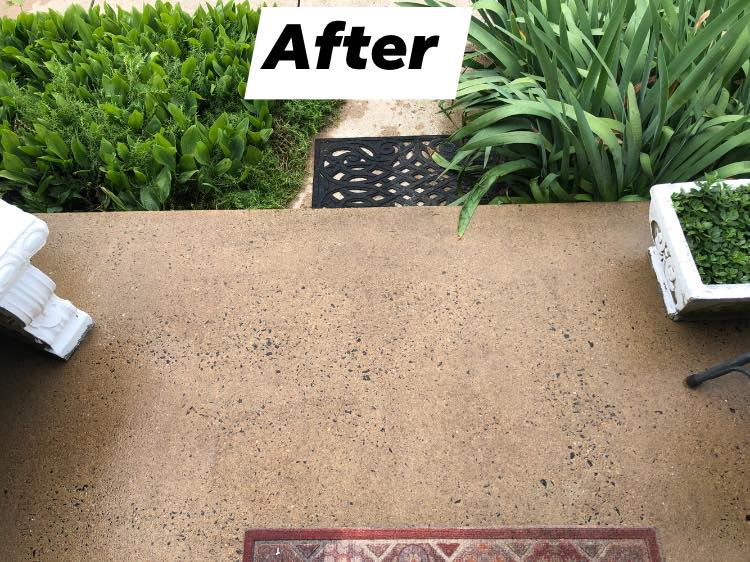
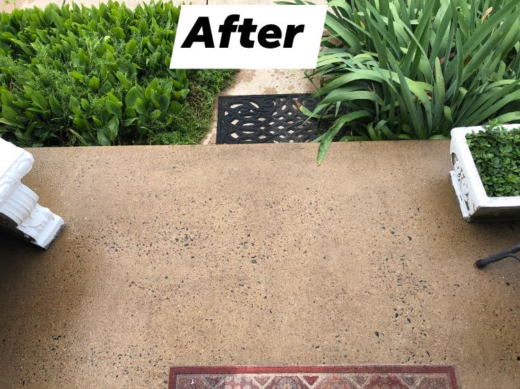
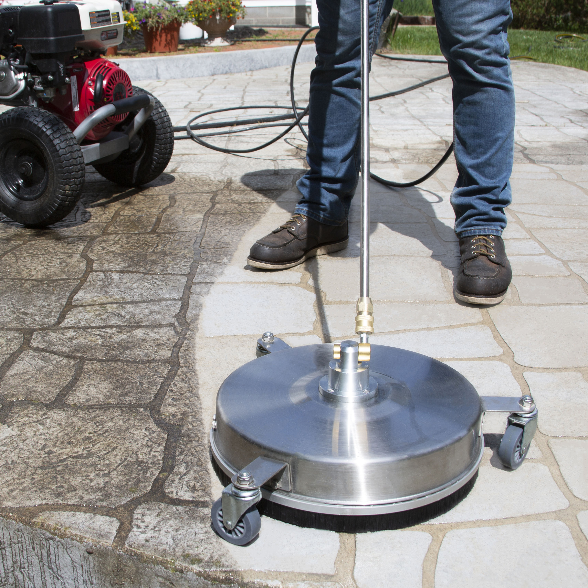
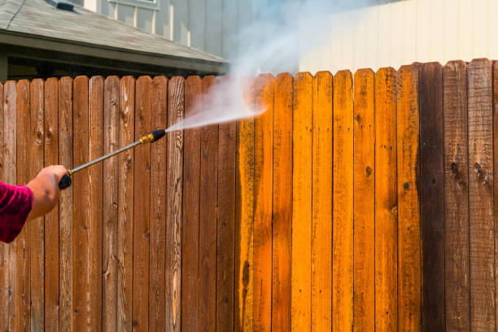

Our Services
Here is a more detailed description of our services
Pressure "Power" Washing
We use motor powered machines that disperse water at an extremely high and precise pressure that allow us to remove dirt, grease, smudges, and mildew from your cement walkways, driveways, steps, or any other hard surface! We connect a special disk that allows us to get the job done faster.
Fence Washing
We use the same machines as we do for hard surfaces however this time, our focus is on removing all that nasty gunk from your fences, balconies, and any other wooden surface. Typically, you’d want to get your wood stained and repainted afterwards.
 Soft washing
Soft washing
This type of wash is typically used to cover big surfaces that otherwise cannot be reach by a precise hand. We do not use or require a high PSI machine for it either. We spray a special combination of Bleach and Soap on your house or roof, let it dissolve all the harmful bacteria, and then rinse it off.
Text
Lists
List
- Item 1
- Item 2
- Item 3
- Item 4
This is an ordered list: